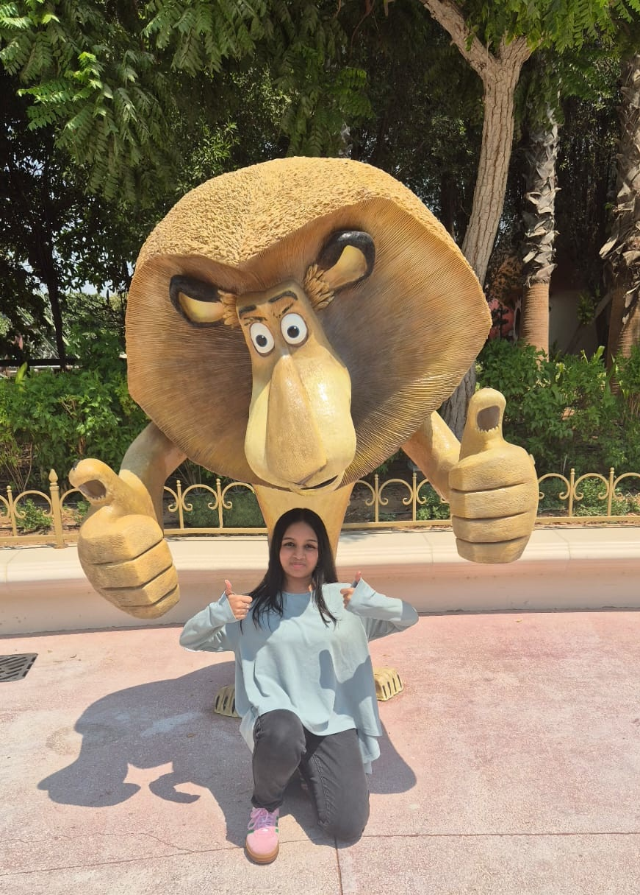

Incoming MSc @ Politecnico di Milano
Shiyamaladevi R S
Telecommunications Engineering • RF & Microwaves • Orbit Systems
I’m an incoming MSc Telecommunications Engineering student specializing in RF, microwaves, and high-integrity communications systems for aerospace and advanced telemetry applications. I build with a research mindset and ship with engineering precision.
Curious mind with a love for all things tech and beyond. From pre-med to a bachelor’s in Electronics & Communication, I’ve explored Machine Learning, IoT, Arduino, ESP32, Supply Chain Management, and Robotics—one project at a time.
When I’m not tinkering with circuits or code, you’ll find me playing keyboard, practicing yoga, or immersed in Bharatanatyam and Carnatic music. Currently geeking out over Quantum Technology!


-1.png)